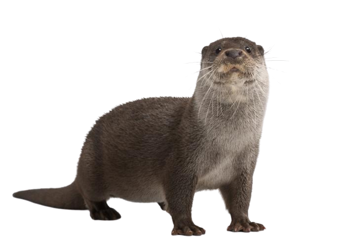

Como todos los mustélidos, tiene el cuerpo alargado, patas cortas, hocico chato y cráneo alargado.
Se caracteriza por su gran tamaño (el cuerpo mide entre 62 y 69 cm y la cola de 37 a 42 cm, y pesa unos 11 kg).
Tiene el pelaje pardo y corto, con una característica mancha blanca en la garganta y membranas entre los dedos de las extremidades anteriores y posteriores.
Se distingue de otros mustélidos acuáticos como el visón por su corpulencia, pelaje más claro,
y por nadar con el cuerpo sumergido y la cabeza afuera, mientras que el visón hace emerger medio cuerpo al vadear.
Se sumerge con movimientos rápidos, y bucea durante de 10 a 40 s.
+Info
Nutria
